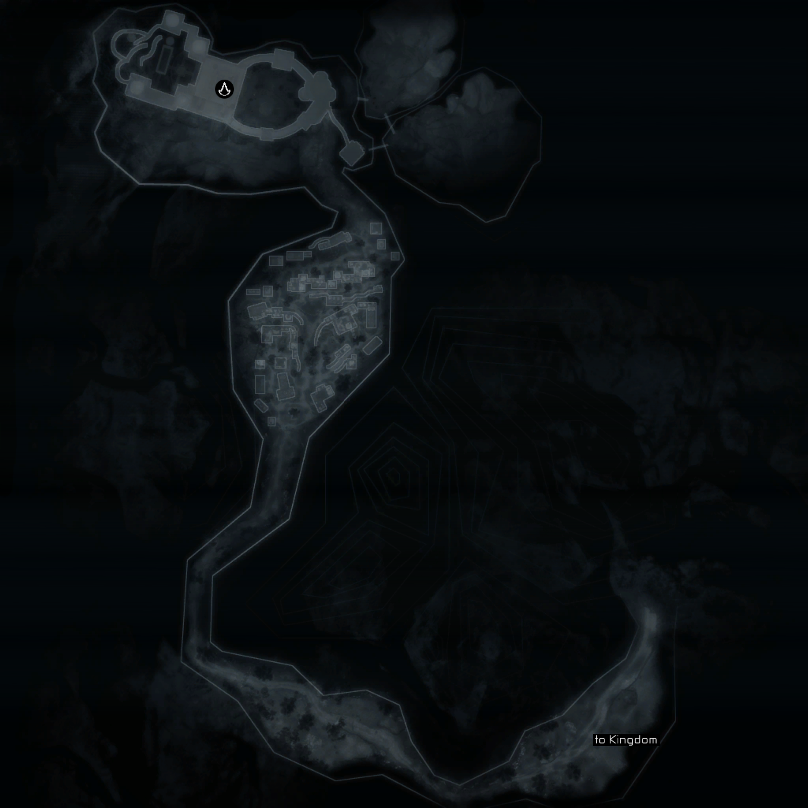
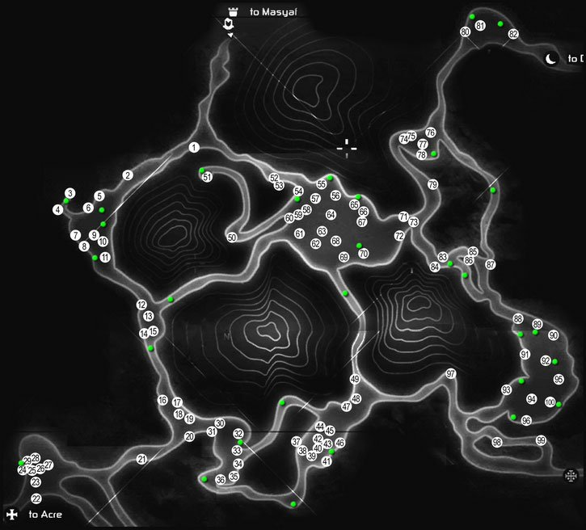
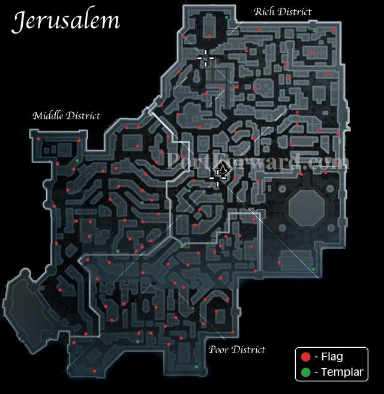
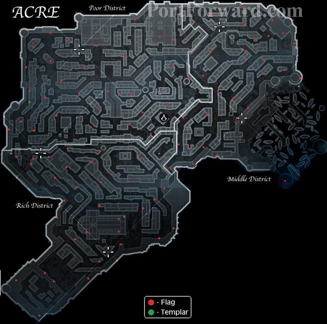
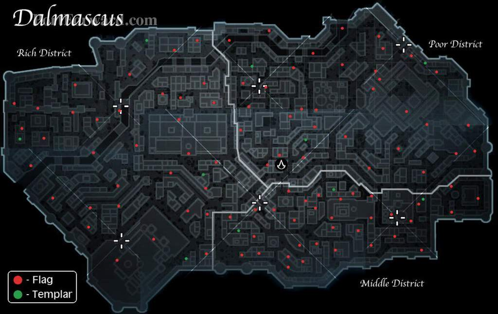

Home
Assassi's Creed 1
Em Assassi's Creed 1 o Protagonista viaja entre diversas localizações. Aqui estão os mapas das localizações que passamos pelo jogo.
Masyaf

Entre os reinos

Jerusalém

Acre

Damasco

AC 2